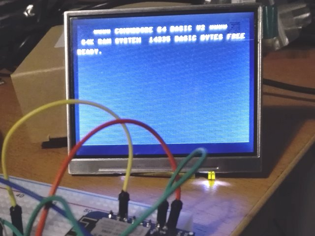
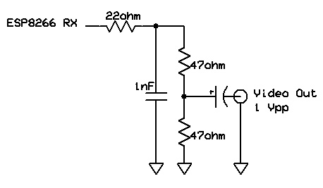
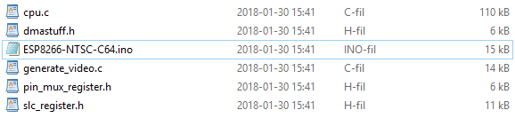
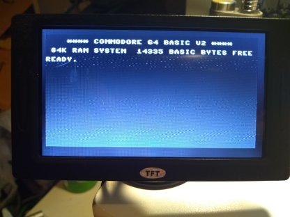

A C64 emulator on the ESP8266 with NTSC output.
Author: Jan Ostman
Published November 12, 2018 on https://www.hackster.io/janost/esp8266-ntsc-c64-emulator-b91a35 under GPL3+.
Can you run a C64 emulation with 40x25 text composite video on a Wemos D1 Mini without additional components?
The CPU emulator is a port of Mike Chambers 6502. And the composite video is based on the work of Cnlohr and Hrvoje Cavrak
The video is output using DMA i2s and uses only about 10% of the CPU.The components makes a lowpass filter at 7MHz and a correct NTSC CVBS signal.
The video has a resolution of 320x200 and is a subset of the upcoming ESP8266 TVout library.
Here is the source code for the C64 emulator.
These files are required for compiling it on the Arduino-IDE:
(A ZIP-file with the source code is attached for download) [copied into this repository]
The emulation has 16K free RAM for basic and only support for the 40x25 text mode.
Keyboard code needs to be added and keys typed poked into the keyboard buffer.
Otherwise it is fully functional.
Have fun!
11/12/2018 update:
I'm in the process of porting my emulators to the ESP32.
It has better native support for memory and video.